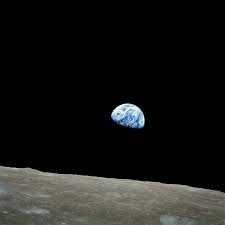

1 :)

Середній діаметр Місяця становить 3475 км. Він займає п’яте місце у списку найбільших супутників Сонячної системи — більше за нього лише Ганімед, Титан, Каллісто та Іо.
Середній діаметр Місяця становить 3475 км. Він займає п’яте місце у списку найбільших супутників Сонячної системи — більше за нього лише Ганімед, Титан, Каллісто та Іо.
Площа поверхні Місяця дорівнює 58 мільйонів квадратних кілометрів. Це більше площі Африки, але менше площі Азії.